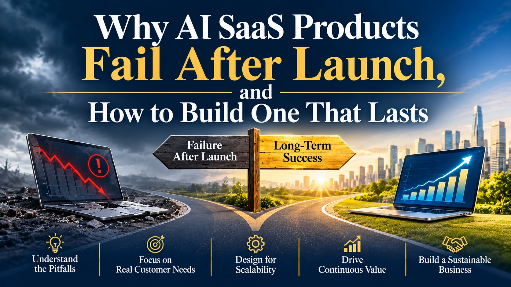

Why AI SaaS Products Fail After Launch, and How to Build One That Lasts

A launch is the most flattering day an AI SaaS product will ever have. Demonstrations land, early users are curious, and the numbers are small enough to look healthy. The harder test begins about a quarter later, when curiosity fades, usage costs become visible, and customers start asking whether the product does something they cannot do without.
Teams that pass that test tend to treat AI as one ingredient in a durable business, not the whole product. They invest in Intelligent SaaS Solutions for Enterprise Growth that are designed around a customer’s job, priced to cover the cost of serving it, and improved continuously after release.
This page walks through five areas where products succeed or stall after launch, following the road shown in the banner above.
Two roads after launch
Early numbers can look the same. The paths separate once costs, support, and expectations arrive.
Five areas that decide the outcome
Understand the pitfalls
Most AI SaaS products do not fail on launch day. They fail in the months after, when novelty fades and real costs and expectations arrive.
- A demonstration-ready product that is not production-ready
- Usage costs that grow faster than revenue
- Quality that drifts as data and models change
Focus on real customer needs
Customers pay to finish a job, not to use AI. Watch how they actually work, then remove the steps that slow them down.
- Name the job the product completes in one sentence
- Talk to customers who stopped using it, not only those who stayed
Design for scalability
Scale is more than traffic. It includes cost to serve, data isolation between customers, and the ability to see what the system is doing.
- Track cost per active customer from the first month
- Keep each customer’s data separate and auditable
- Monitor quality, speed, and errors, not only uptime
Drive continuous value
Value that stops growing stops being renewed. Build a loop that turns usage and feedback into steady, visible improvement.
- Keep a fixed set of test cases and run it on every change
- Ship improvements customers can notice
Build a sustainable business
Pricing, support, security, and the roadmap must work together. A product can be loved and still lose money on every customer.
- Align price with the cost of serving each plan
- Prepare for security and compliance reviews before large deals
- Decide what the roadmap says no to
Five questions to ask this week
- What job does our product complete, in one sentence?
- What does one active customer cost us each month?
- Which customers stopped using it, and what did they tell us?
- How do we know quality has not slipped since the last change?
- What would we stop building if we had to choose?